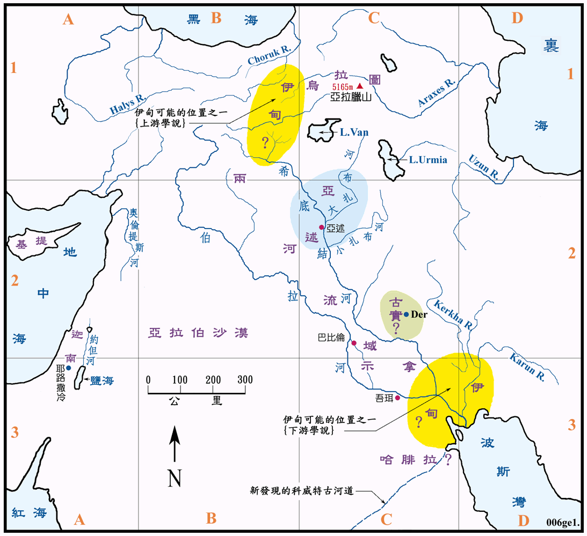

| 圣经 | 说明 |
|---|---|
| 创2:8-15，3:23 | 耶和华神在东方伊甸立了一个园子，把人安置在那里。神因亚当犯罪，就把他们赶出园子。 |
| 创4:16-17 | 该隐被赶走，去住在东方的挪得之地，又为子建以诺城。 |
| 创6:13-8:4 | 挪亚建方舟，洪水后，方舟停留在亚拉腊山上。 |
伊甸和园子的位置，至今仍是一个未能解决的问题。在创世记二章十至十四节中，共用了七个地名来说明，只是在古代和现今的地图中都未能找到一处能完全符合圣经条件的地方来，其原因可能是洪水已经改变了原有的地形，因此也就已超过了我们所能研究的范围，为了找出伊甸究竟是在何处，长久以来已有着众说纷纭的意见，有人说是在现今的两河流域，也有的说是在衣索比亚，或是在北极、北非、印度、北美等地方，但是都不能完全符合圣经的条件。
现今在传统上则接受是在两河流域的某一处，可能在它的发源地，也可能是其下游出海之处。这可以从英文圣经上看出来，因为主要的英文圣经译本把伯拉河译成幼发拉底河，把希底结河译成底格里斯河，由这两条河形成的两河流域，就是圣经上的米所波大米，是人类最古老的文明发源地之一，这是无可质疑的事。此外除了亚述是众所周知的文明古国之外，其他的四个地名则无答案。所以这种说法虽然仍很牵强，也不能完全符合圣经，但是要比其他的理论合理得多。至於它是在两河流域的上游或是下游 ? 各自的理由如下：
上游说：即是两条大河的发源地，位於北方的亚拉腊山和乌拉图地区之西，其地是这两条大河和另两条较小河流的源头，一条是 Araxes River，向东流入里海；另一条是 Choruk River，向北流入黑海。
下游说：即是两条大河的汇合和入海之处，位於波斯湾的北岸，就是古时的示拿和苏美地区。除了两大河之外，还有一条是发源於撒格罗山脉的 Karun River，也是流入波斯湾；另一条也是发源於撒格罗山脉，名叫 Kerkha River，但它是消失在底格里斯河以东的平原中。在数年以前，又在阿拉伯的中部又发现了一条六千年以前的古代水道，它发源自沙乌地，自东南部汉志山区北流了约 850公里，在科威特的附近入海，因为那里是哈腓拉可能的所在地，所以此一已消失了的古河道，很可能就是环绕哈腓拉全地的比逊河，但仍有待进一步的查考。
挪得之地和该隐所建之以诺城，均在伊甸园之东，其位置亦因伊甸之位置未能确定而不明。
在传统上，学者都认同现今土耳其东北方的亚拉腊山就是圣经中的亚拉腊山，峰高5165公尺，山顶终年积雪，很难接近，故至今都未能有正式的考古行动，但是它的位置和高度尚称符合圣经之条件。此外也有很多非正式的记录，叙述在山中等地所见到可能是方舟的物体，都有待考古学家去证实。